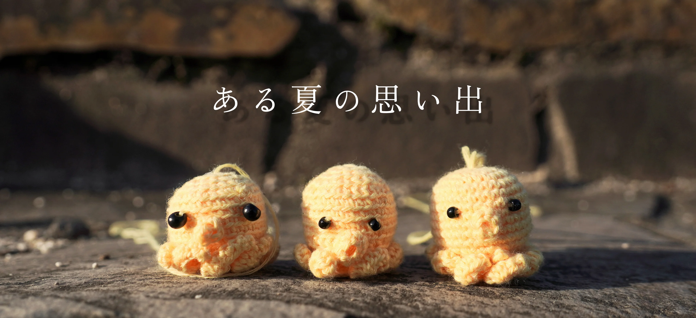
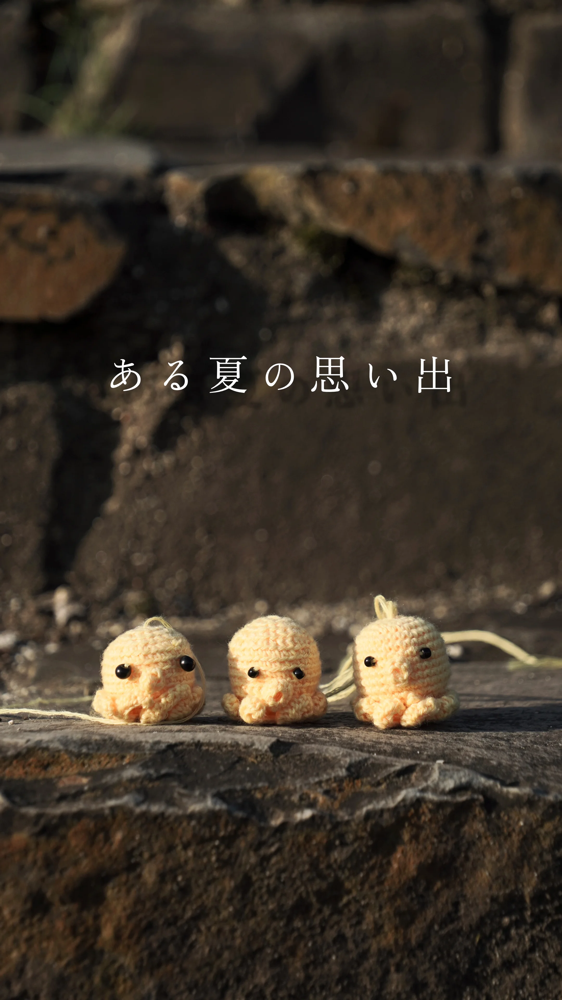

【コラム２】
毛糸でタコさんを作ったからと
撮影用のモデルにいただきました
毛糸で作ったと聞いたので
太い糸を勝手にイメージしていたのですが
実物を見たらとても細い糸で
そのこまかさに驚きました
そんなタコさんたちの写真集です
（写真だと大きさがわかりにくいかもしれないですね）


【コラム４】
あの日はいつもと同じように
タコさんたちを連れて
撮影に行っていました
タコさんたちは大事に
メガネケースに入れていました
そして私はあろうことか
そのメガネケースを
ベンチに置き忘れてしまったのです


【コラム５】
メガネケースを失くしていることに
気がついたのは2日後でした
私は大慌てで家じゅうを探したのですが
見つからず。
私は置き忘れたかもしれない場所を
急いで見に行きました。
そして見に行ったベンチの上には
しっかりメガネケースが置いてありました。


【コラム６】
メガネケースを見つけて
とてもうれしくなりました。
それから、「よかったよかった」と
一安心しながらメガネケースを開けました
すると、驚くべきことが起こっていたのです
なんと、タコさんが一匹
いなくなってしまっていたのです


【おわりに】
結局そのタコさんは見つかりませんでした。
「ある夏の思い出」
出会いと別れ
ご視聴ありがとうございました。